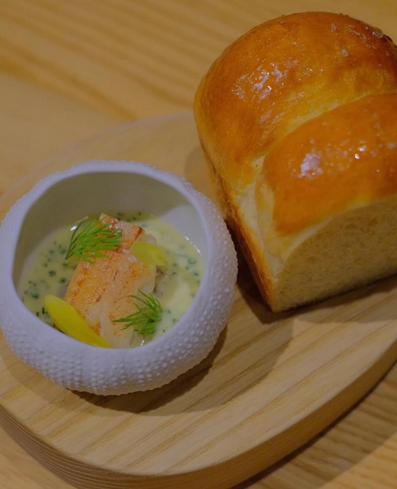

Goals & Accomplishments
Theodore Thuang’s greatest accomplishment so far has been graduating from culinary school, a milestone that gave them clarity and purpose.
Before this, they struggled to find the right path, often chasing goals that weren’t truly their own.
Culinary school changed that, helping them focus on their passion for cooking and setting the stage for their future.

While Theodore is experienced, he knows that there is much to learn from his mentors. He seeks to learn the techniques from those that have known them.
Theodore is working toward their dream of opening a gastropub, blending Filipino heritage with expertly crafted skewers and drinks.
More than just a business, this goal represents their love for food, culture, and community.
Though ambitious, their dedication to refining their skills and building a welcoming space keeps them motivated.
Here we see Theodore hard at his craft. He is expertly balancing taste, technique, and presentation through careful precision.
It is far more than just the skills that he has learned through concepts, Theodore experiments and adjusts based on the reception of his creations.
He works towards his ambition of his gastropub through determination and experience aside from passion alone.